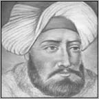

OSMANLI DEVLETİ’NDE ÖLDÜRÜLEN DEVLET ADAMLARI
ÇANDARLI HALİL PAŞA
•
II. Murad’ın saltanat döneminde, 1439’da başvezir olan Osmancıklı (Amasyalı) Koca Mehmed Nizamüddin Paşa vefat ettikten sonra başvezirlik görevine geçmiştir. Çandarlı Halil Paşa, idam edilecek ilk veziriazam olacağını bilmemektedir. II. Murad zamanında Çandarlı Halil Paşa, devletin tek egemeni gibi olmuş, bütün gücü elinde toplamıştır. İktidarı, henüz on üç yaşındaki oğlu II. Mehmed’e bıraktığı, sonra tekrar geri aldığı ve sonra tekrar geri verdiği olaylı dönemlerden sonra II. Murad, 1451 yılında ölür. II. Mehmed, üçüncü ve son kez padişah olur. Akıllı bir insan olan veziriazam Çandarlı Halil Paşa’nın da üstün gayretleriyle İstanbul fethedilir.
II. Mehmed artık “Fatih” olmuştur. İşte ancak ondan sonradır ki yaşlı veziriazam, Bizans’tan rüşvet olarak torik balıkları içinde altın aldığı ve kuşatmayı uzattığı gibi gülünç isnatlarla İstanbul’da tutuklanıp, Edirne’ye gönderilir. Orada cellatlar urganlarla gelip, 24 yıllık Sadrazam Çandarlı Halil Paşa’yı boğarak idam ederler. (1 Haziran 1453)
Çandarlı Halil Paşa
Paşa’nın o sırada kazasker olan oğlu azledilir. Edirne kadısı olan diğer oğlu Süleyman Çelebi ise, Fatih’in oğlu II. Bayezid döneminde veziriazamlığa kadar yükseldikten sonra İnebahtı Deniz Muharebesi’nde ölür. İşte bu tarihten sonra imparatorluk yönetimi, artık tümüyle Türk kökenlilerden çözülüp devşirmeden yetişmiş devlet adamlarının eline geçer. Fatih ise Çandarlı Halil Paşa ile başlattığı veziriazam idamlarını sürdürecek ve sonraki iki veziriazamını da cellatlara verecektir.
RUM MEHMED PAŞA
•
Çandarlı’dan sonra iki yıl İshak Paşa’nın vekâlet ettiği veziriazamlığa, 1455’de Mahmud Paşa getirilir. 12 yıl sadarette kaldıktan sonra 1467’de azledilip, onun yerine getirilen Rum Mehmed Paşa da üç yıllık iktidarından sonra boğdurulan Osmanlı veziriazamlarının ikincisi olarak 1470’de boğduruldu. İdamına neden olan olaylar ise kısaca şöyledir: Varsak Türkmenleri üzerine hareket etmiş ancak Varsak beylerinden Uyuz Bey tarafından mağlup edilmiş, Karaman seferinde ele geçirdiği bütün mal ve para, Türkmenlerin eline geçmiştir. Karamanlı Mehmed Paşa’nın teşvikiyle azledilmiş ve 1470 yılında boğularak öldürülmüştür.
MAHMUD PAŞA
•
Mahmud Paşa, ikinci kez sadarete getirilmişti. İki yıl kadar sadarette kaldıktan sonra 1474 tarihinde önce azledilmiş, daha sonra da boğdurulmuştur. Fatih zamanında boğdurulan veziriazamların üçüncüsü olmuştur.
Azline sebep olan esas hadise; Otlukbeli Zaferi’nin ardından Tebriz’e doğru kaçan Akkoyunlu Hükümdarı Uzun Hasan’ın peşinden gitmemesi olmuştur.
Bu olayın yanı sıra, Mahmud Paşa ile Şehzade Mustafa’nın arası açıktır. Kadınlara düşkün olan Şehzade Mustafa, Mahmud Paşa’nın karısına tecavüz etmiştir. Paşa, hanımını boşamış ancak, Fatih’in emriyle tekrar nikâhlamıştır. Şehzade’nin ölümü üzerine Paşa’nın düşmanları Fatih’i fitlemişlerdir. Paşa’nın pek keyiflendiği ve hatta Şehzade’yi, Paşa’nın öldürmüş olabileceği konusunda söylentiler yayılır. O sırada Edirne dolaylarındaki çiftliğinde sürgün yaşayan Paşa, Fatih’e başsağlığı dilemek için İstanbul’a geldiğinde tutuklanarak, Yedikule zindanlarına atılır. On sekiz gün sonra da idam edilir.
GEDİK AHMED PAŞA
•
1474 tarihinde veziriazam olan Gedik Ahmed Paşa, aynı yıl içerisinde Fatih tarafından Arnavutluk seferini yapması için görevlendirilir. Paşa, inatla bu sefere karşı durması üzerine azledilir. Rumeli Hisarı’na hapsedilir. Ama kısa bir süre sonra hapisten çıkarılarak kaptanıderya olarak atanır.
Gedik Ahmed Paşa
Fatih’in iki oğlu vardır. Gedik Ahmed Paşa, Cem Sultan’ı tutmaktadır. Ancak taht’a II. Bayezid geçer. Cem Sultan Rodos’a kaçar. Gedik Ahmed Paşa, II. Bayezid’in verdiği davet üzerine Edirne’ye gider. Bütün davetlilere beyaz kaftanlar hediye edilirken, Gedik Ahmed Paşa’ya siyah kaftan hediye edilir. Davetin çıkışında da Gedik Ahmed Paşa, cellatlara boğdurulur. (18 Aralık 1482)
KOCA MUSTAFA PAŞA
•
Koca Mustafa Paşa bir devşirmeydi. Sultan II. Bayezid, kendisine tehdit amacıyla kullanılan kardeşi Cem Sultan’ı, Papa 8. Inosan’dan alması için Roma’ya Kapı Ağası Mustafa Ağa’yı gönderir. Papayla yaptığı anlaşma sonucu Cem Sultan’ın öldürülmesini sağladığı için Mustafa Paşa, veziriazamlığa getirilir. Böylece Bayezid’in son, Yavuz’un ilk veziriazamı olur.
Yavuz, babasından kalma Veziriazam Koca Mustafa Paşa’yı, 1512 tarihinde, kendisiyle yemek yerken kementle boğdurtur.
DUKAKİNOĞLU AHMED PAŞA
•
Arnavut asıllı olan Ahmed Paşa, kendi isteğiyle Müslüman olup, Osmanlı’ya hizmet etmiştir. Veziriazamlıkta sadece iki buçuk ay kalabilmiştir. Kendisine yapılan suçlama ise, “yeniçeri ayaklanması düzenlemek” şeklinde olmuştur.
YUNUS PAŞA
•
Yunus Paşa, yaklaşık yedi ay veziriazamlık yapmıştır. Öldürülmesine neden olan olay ise, Yavuz Sultan Selim’in Mısır valiliğine getireceği kişiyi eleştirmesi olmuştur. 1517 Eylül ayında kellesi kopartılmıştır.
PARGALI İBRAHİM PAŞA
•

Pargalı İbrahim Paşa
Pargalı İbrahim Paşa, yaklaşık 13 yıl boyunca veziriazamlık yapmıştır. Kanuni Sultan Süleyman zamanında, 1536 tarihinde boğdurtulmuştur. Boğdurtulmasına, Hürrem Sultan’ın neden olduğu kaydedilmektedir.
KARA AHMED PAŞA
•
Kanuni Sultan Süleyman ile İran seferine katılmıştı. Damat Rüstem Paşa’nın sadaretten azli üzerine veziriazamlığa tayin edildi (1553). Sefer dönüşünde Rüstem Paşa’nın tekrar sadrazamlığa getirilebilmesi için kışkırtılan Padişah’ın fermanıyla suçlu görülerek, bir divan toplantısı sonrasında arz odası önünde idam edildi (1555).
FERHAD PAŞA
•
III. Mehmed döneminde veziriazam Ferhad Paşa, önce azlediliyor sonra da 1595 yılında cellatlara boğdurularak idam ediliyor. Ferhad Paşa, Osmanlı tarihinde, fitne fücur kurbanı edilerek idam edilen bir veziriazamdır.
HADIM HASAN PAŞA
•
Ölüm cezasına çarptırılan veziriazamlardan birisi yine III. Mehmed’in veziriazamlarından Hadım Hasan Paşa’dır. Veziriazamlığının yedinci ayında, Safiye Sultan’ın yaptıracağı Yeni Camii’nin temelini atmaya giderken, bostancıbaşı tarafından yakalanıp, önce beş altı gün Yedikule zindanlarında hapsedilmiş, sonra da boğularak idam edilmiştir. (Mayıs 1598)
YEMİŞÇİ HASAN PAŞA
•
III. Mehmed, bir veziriazamını daha boğdurtmuştur. O da Yemişçi Hasan Paşa. Aşırı rüşvetçi Safiye Sultan’ın önerisiyle göreve getirilen Arnavut asıllı bu Sadrazam’ın, işkenceyle vergi toplatma ve bol bol adam öldürtme huyu vardır. 1603 Eylül ayında azledilir. Daha sonra da Yeniçeri Ocağı’nı başkaldırmaya teşvik suçlamasıyla, Sütlüce’deki konağına bir bostancıbaşı gönderilip, kendi konağının bahçesinde boğdurularak idam edilir.
DERVİŞ PAŞA
•
Üçüncü Mehmed’ten sonra yerine oğlu I. Ahmed geçiyor. Derviş Paşa, Bosnalı. Bostancıbaşı (yani sarayın baş celladı) olarak göreve başlamışken, Sultan’ın gözüne girerek hem vezirliğe hem de kaptan paşalığa terfi ediyor. Sultan I. Ahmed, o sırada veziriazam olan Lala Mehmed Paşa’ya, İran’a sefer başlatma emri veriyor. Durup dururken başlatılmış olan Avusturya Savaşı sürüp gitmekte iken bir de İran’a savaş açılmasına karşı çıkan Sadrazam’a Sultan, “Bak canından olursun ha!” deyince, Lala Mehmed Paşa öyle kahroluyor ki felç iniyor. Birkaç gün içinde de ölüyor. Sultan, Ahmed Derviş Paşa’yı başvezir yapıyor. (Mayıs 1606)
Ölen Lala Mehmed Paşa’nın malına mülküne el konuluyor. Parası orduya dağıtılıyor. Padişah, mallarının, yetim kalan çocuklarına bırakılmasına izin veriyor. Ancak yeni veziriazam Derviş Paşa, bu mallara da el koyarak Lala Mehmed Paşa’nın çocuklarını açıkta bırakıyor. Zengin Yahudilerden, sonradan ödeme vaadiyle gümüş ve mücevher toplayıp üzerine yatıyor vb. Kendisine öfkelilerin artması üzerine, Demirkapı’dan Saray’a doğru (Saray’ı basmak üzere) tünel kazdırttığı söylentisi çıkartılıyor. Sultan Ahmed ise, bu söylentinin doğruluğunu araştırmaya bile gerek görmeden öldürülmesini emrediyor. Sarayda şehzadeler muallimhanesine girdiği sırada acemioğlanlar tarafından öldürülüyor. (Aralık 1606)
NASUH PAŞA
•
1611 Ağustos’unda göreve gelmiştir. Padişah’ın bir emrine kaşı çıkması üzerine, Ekim 1614’de katline ferman verilmiş. Kendisini boğan cellat, Ohrili Hüseyin Ağa da daha sonra Ohrili Hüseyin Paşa namıyla veziriazam olmuştur.
BENDERLİ ALİ PAŞA
•
Benderli Ali Paşa, II. Mahmud saltanatında, 26 Mart 1821-30 Nisan 1821 tarihleri arasında bir ay üç gün sadrazamlık yapmış bir Osmanlı devlet adamıdır. Yunan Ayaklanması’nı gizlice desteklediği gerekçesi ile 22 Nisan 1821’de Fener Patriği Grigoryos’un asılmasına ferman buyurmuştur. Ancak bu irade sonrasında 30 Nisan’da Kıbrıs’a sürülmüş ve idam edilmiştir. Tarihte padişah emri ile idam edilen 44. ve son sadrazamdır.